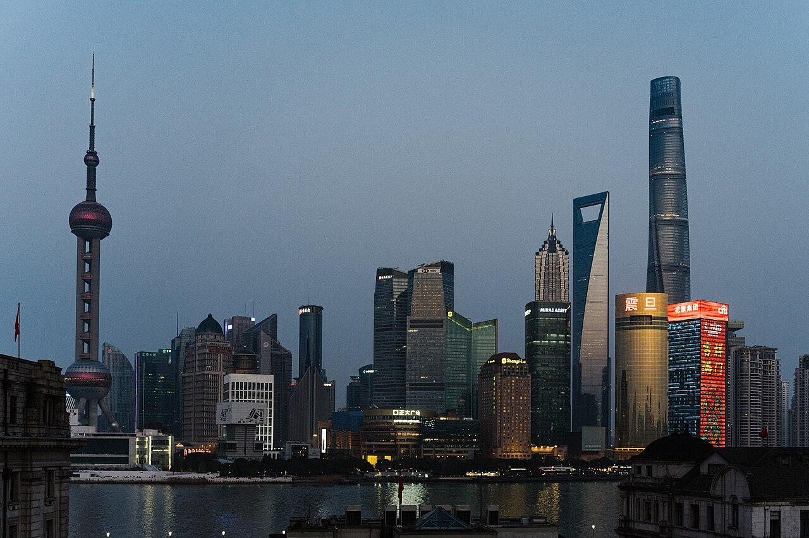
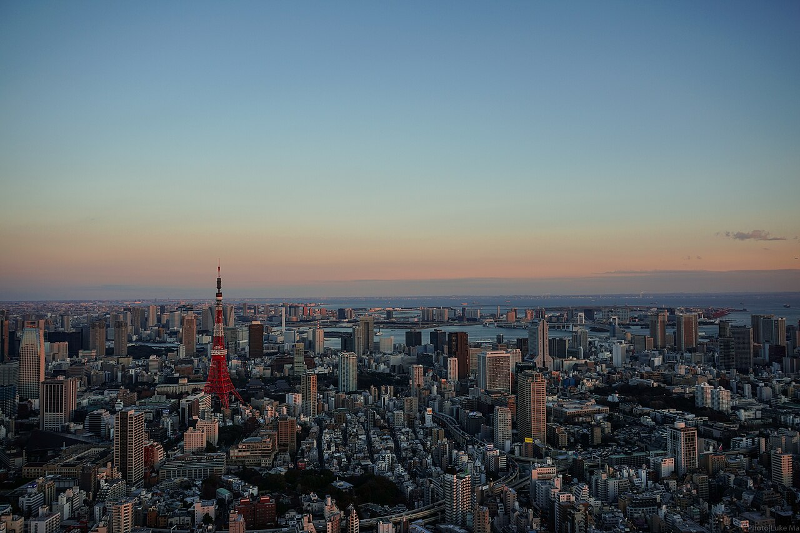
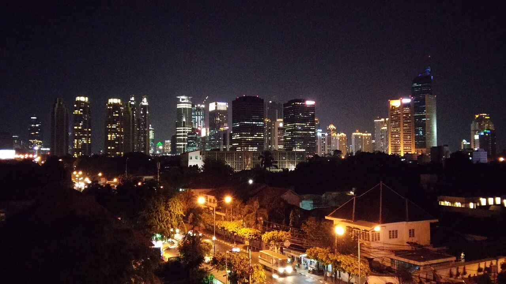
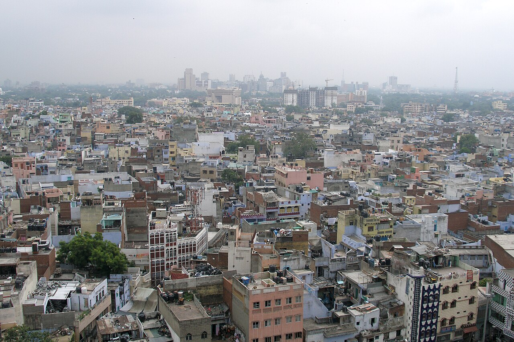

Пять первых мест рейтинга Demographia за 2025 год. На фотографиях показаны Гуанчжоу, Шанхай, Токио, Джакарта и Дели.




Гуанчжоу - один из городов объединённой территории Гуанчжоу-Шэньчжэнь.
Население объединённой застроенной территории Гуанчжоу-Шэньчжэнь оценивается в 69 562 000 человек. Эта оценка относится ко всей территории, а не к одному городу в административных границах.
Гуанчжоу и Шэньчжэнь расположены на юге Китая, в районе дельты Жемчужной реки. Гуанчжоу известен как исторический торговый центр, а Шэньчжэнь - как центр производства электроники и развития технологий. Рост соседних городов сформировал обширную застроенную территорию.
Подробнее о Гуанчжоу-Шэньчжэне
Шанхай - часть городской территории Шанхай-Чанчжоу.
Население застроенной территории Шанхай-Чанчжоу оценивается в 45 115 000 человек, площадь - в 9 731 км². В рейтинге учитывается не только Шанхай, но и соседние города, застройка которых образует общую городскую территорию.
Эта территория расположена на востоке Китая, в районе дельты Янцзы, и простирается от Шанхая до Чанчжоу. Шанхай - крупный порт и финансовый центр; соседние города связаны с ним транспортными путями, промышленностью и торговлей.
Найти Шанхай-Чанчжоу в таблице
Токио - часть городской территории Токио-Йокогама.
Население территории Токио-Йокогама оценивается в 37 325 000 человек. В неё входят Токио, Йокогама и окружающая городская застройка, поэтому показатель не равен населению одного Токио.
Токио и Йокогама расположены на острове Хонсю, у Токийского залива. Токио является столицей Японии, а Йокогама - одним из её крупных портовых городов. Развитая железнодорожная сеть связывает жилые районы, деловые центры и пригороды этой территории.
Перейти к таблице городских территорий
Demographia сопоставляет застроенные городские территории, а не только административные границы муниципалитетов. Поэтому в названии территории иногда объединены несколько городов, например Токио-Йокогама или Йоханнесбург-Претория. Числа зависят от определения границы и не являются единственно возможным способом подсчёта населения города.